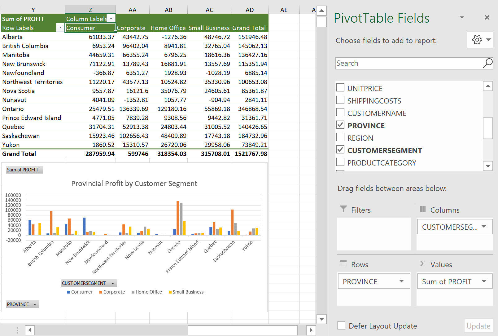
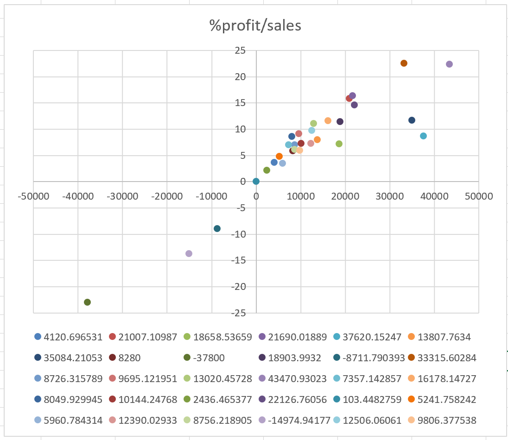
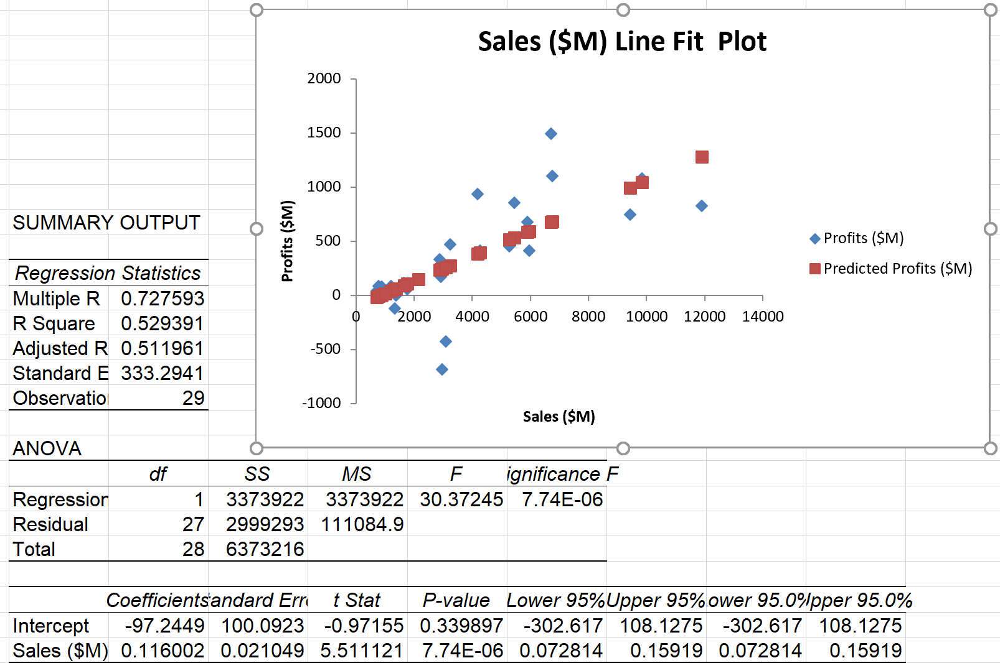
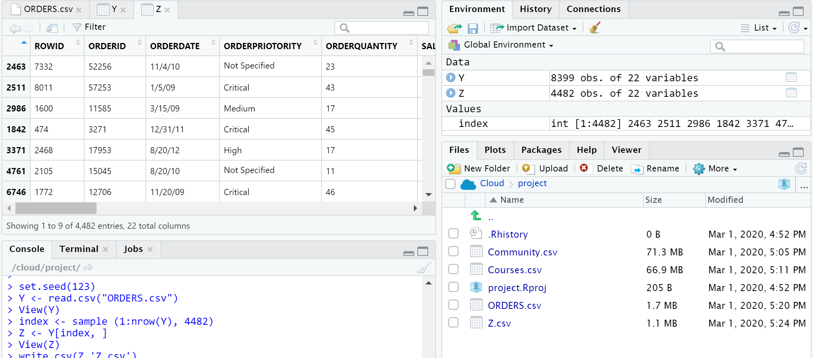
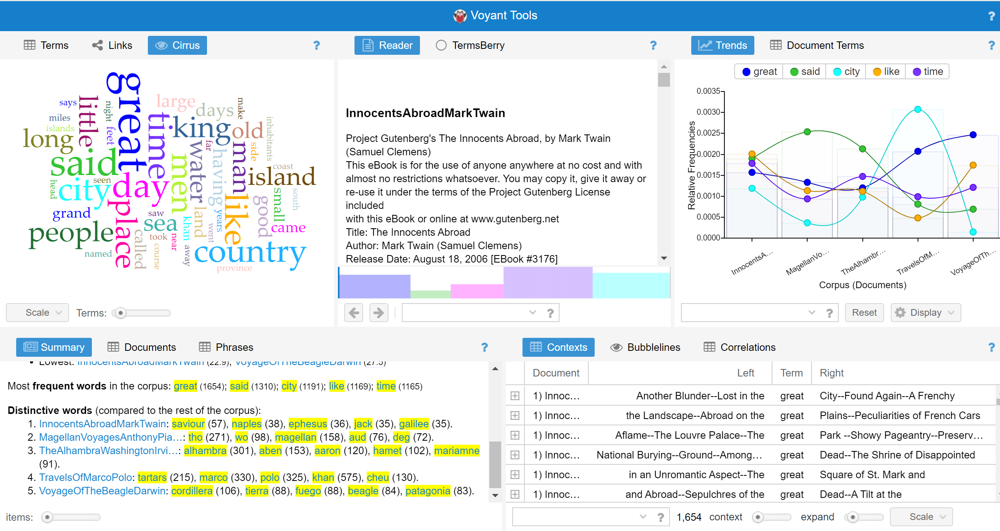

Data Analysis Computer Lab work for Professor Fortino
Jan 2020
Excel, R
Lab work for Andre Fortino's Data Analysis for Business Decisions: A Laboratory Manual book
I helped Prof. Fortino to update the screenshots of those lab manual for his book by walking running through the data analysis exercises with the latest software version.
Some of the exercises includes excel pivot tables, regressions, R studio for data cleaning, and Voyant, a free online tool for sentiment analysis/ text analytics.
Excel: Pivot Table:

Excel: Scatter Plot:

Excel: Regression:

R Studio: Data Cleaning:

Voyant: Sentiment Analysis:
